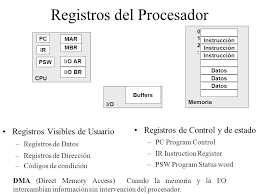

Unidad 2
Estructura y funcionamiento de la Unidad Central de
Procesamiento.
Funcionalmente, la unidad central de proceso está constituida por dos elementos: la unidad aritmético-lógica y la unidad de control. La ALU (Arithmetic Logic Unit) es la unidad encargada de realizar las operaciones elementales de tipo aritmético y lógico. Para comunicarse con otras unidades utiliza el bus de datos.
Organizacion del procesador :
La función principal de un procesador es ejecutar instrucciones y la organización que tiene viene condicionada por las tareas que debe realizar y por cómo
debe hacerlo.
Un conjunto de registros: espacio de almacenamiento temporal de
datos e instrucciones dentro del procesador
Unidad aritmética y lógica o ALU1
: circuito que hace un conjunto
de operaciones aritméticas y lógicas con los datos almacenados dentro
del procesador.
Unidad de control: circuito que controla el funcionamiento de todos
los componentes del procesador. Controla el movimiento de datos e
instrucciones dentro y fuera del procesador y también las operaciones
de la ALU.
Estructura de Registros
¿ Que es un registro ?
Un registro es una memoria que esta ubicada en el procesador y se encuentra en el nivel mas alto en la jerarquia
de memoria, por lo tanto tiene una alta velocidad pero con poca capacidad para almacenar datos que va desde los 4 bists hasta
los 64 bits dependiendo del procesador que se utilice. Los datos que almacena son los que se usan frecuentemente.

Registros visibles para el usuario:
Son aquellos que pueden ser referenciado por medio del lenguaje maquina que ejecuta la CPU, los registro que normalmente disponibles son:
Registros de propósito general: son aquellos que pueden guardar tanto datos como direcciones
Registro de datos: que pueden ser asignados por el programador a diversas funciones. En algunos casos son de propósito general y pueden ser empleados por cualquier instrucción de máquina que lleve a cabo operaciones sobre los datos.
Registros de direcciones: contienen direcciones en la memoria principal de datos y este tipo de registro puede ser de propósito general o estar a un modo específico de direccionamiento.
Códigos de condición: también conocidos como indicadores o flags. Los códigos de condición, son bits activados por el procesador como resultado de determinadas operaciones
2.3 El ciclo de instruccion:
Un ciclo de instruccion es el periodo que tarda la unidad central de proceso (CPU) en
ejecutar una instruccion de lenguaje maquina.
Visualizando el ciclo de instrucción:

Los procesadores no son diferentes desde cierto punto de vista a un motor de combustión, los cuales siempre realizan un proceso continuo de explosión del combustible en diferentes etapas, ya sean de 2 tiempos o de 4 tiempos. El motivo de ello es que los procesadores funcionan en tres etapas distintas en su versión más simple que son las siguientes:
Fetch o Captación: En la que la instrucción es captada desde la memoria RAM y copiada a dentro del procesador.
Decode o Descodificacion: En la que la instrucción previamente captada es descodificada y enviada a las unidades de ejecución
Execute o Ejecución: Donde la instrucción es resuelta y el resultado escrito en los registros internos del procesador o en una dirección de memoria de la RAM
Estas tres etapa se cumplen en todo procesador, existe una cuarta etapa que es la de Write-Back que es cuando las unidades de ejecución escriben el resultado, peor normalmente esto se cuenta dentro de la etapa de ejecución del ciclo de instrucción.
Primera etapa del ciclo de instruccion: Fetch
La primera etapa del ciclo de instrucción se encarga de captar las instrucciones que hay en la memoria RAM asignada al procesador a través de una serie de unidades y registros que son las siguientes:
- Program Counter o Contador de Programa: El cual apunta a la siguiente línea de memoria donde se encuentra la siguiente instrucción del procesador. Se incrementa en 1 su valor cada vez que se termina un ciclo completo de instrucción o cuando una instrucción de salto cambia el valor del contador de programa.
- Memory Address Register o registro de direccionamiento de memoria: El MAR copia el contenido del PC y lo envía a la RAM a través de los pines de direccionamiento de la CPU, los cuales están cableados con los pines de direccionamiento de la propia memoria RAM.
- Memory Data Register o registro de datos a memoria : En el caso que la CPU tenga que realizar una lectura a memoria, lo que hace el MDR es copiar el contenido de esa dirección de memoria a un registro interno de la CPU, el cual es un registro temporal de paso antes de que su contenido sea copiado al Instruction Register. El MDR al contrario del MAR esta conectado a los pines de datos de la RAM y no a los de direccionamiento y en el caso de que se trate de una instrucción de escritura el contenido de lo que se quiere escribir en la RAM también se escribe en el MDR.
- Instruction Register o Registro de Instrucción: La parte final de la etapa de captación o fetch es la escritura de la instrucción en el registro de instrucción, del cual la unidad de control del procesador copiará su contenido para la segunda etapa del ciclo de instrucción.
La unidad de control:
La unidad de control es la pieza mas compleja que existe en un procesador y sus tareas son las siguientes:
Se encargan de coordinar el movimiento y el orden en que de los datos que se mueven dentro y fuera del procesador, así de las diferentes subunidades que se encargan de ello.
En general se considera que las unidades de la etapa de captación o Fetch forman parte del hardware que llamamos unidad de control y dicho hardware es llamado también el Front-End de un procesador.
Interpreta las instrucciones y las envía a las diferentes unidades de ejecución a las que esta conectado.
Esta comunicado a las las diferentes ALUs y unidades de ejecución del procesador que actúan
Se encarga de captar y descodificar las instrucciones, sino también de escribir los resultados en los registros, caches o en la dirección correspondiente de la RAM.
La unidad de control lo que hace es descodificar las instrucciones y esto lo hace porque cada instrucción en realidad no deja de ser una especie de oración en donde primero va el verbo y luego el objeto directo u objeto sobre el que se hace la acción. El sujeto se acaba eliminando en este lenguaje interno de los ordenadores por el hecho que se sobre-entiende que es el propio ordenador el que lo ejecuta, asi pues cada cantidad de bits es una oración donde los primeros 1 y 0 corresponden a la acción y los que vienen a continuación es el dato o la localización del dato que se quiere manipular.
La segunda etapa: Decode
Hay diferentes tipos de instrucciones y no todas hacen lo mismo, por lo que dependiendo del tipo de instrucción necesitamos saber hacía que unidades de ejecución se van a enviar y la manera más clásica de hacerlo es a través de lo que llamamos un descodificador, el cual toma cada instrucción, la divide internamente según el opcode o instrucción y el dato o la dirección de memoria donde se encuentra este.
Por ejemplo en el diagrama de arriba tenemos el diagrama de un procesador de solo 8 instrucciones, las cuales se pueden codificar en solo 3 bits. Cada una de las instrucciones una vez descodificadas se envían a las diferentes unidades de ejecución que las resolverán.
Este ciclo de instrucción es el más complejo de todo y el que define el tipo de arquitectura. Dependiendo si tenemos un conjunto de instrucciones reducido o complejo esto afectará a la naturaleza de la unidad de control, dependiendo del formato de la instrucción o de cuantas se procesen al mismo tiempo la fase de descodificación y por tanto la unidad de control tendrá una naturaleza u otra.
Tercera etapa: Execute